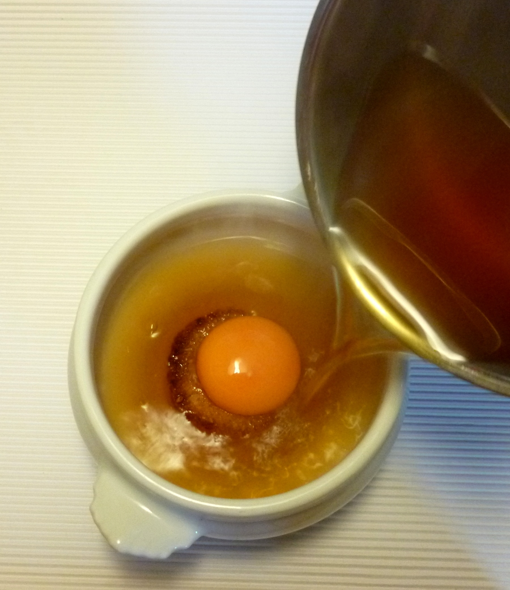

ZUPPA ALLA PAVESE
Ingredientes
- 1 l de consomé de buey desgrasado y clarificado
- 4 huevos orgánicos o ecológicos y muy frescos
- 4 cuch de parmesano recién rallado --opcional y no imprescindible

Lo único complicado de esta receta es preparar un consomé que resucite a un muerto y limpiarlo de grasa e impurezas. No vale, como puede comprenderse, un caldo de bote. También encontrar huevos de corral, orgánicos o ecológicos, buenos de verdad. Lo demás no es nada, pero el resultado es muy delicado. A mi me gusta más sin queso, no es imprescindible a mi modo de ver pero, para ser sinceros, sí lo es cuando se quiere respetar el lugar de origen de la sopa, la ciudad de Pavía.
También se puede preparar con presentaciones más rústicas, como es habitual en Pavía, más estilo «sopas» –es así como se denomina la sopa que lleva pan como ingrediente principal en español– con más pan frito, el huevo entero, bien de queso. Es otra opción, pero a mi me gusta así, como se hacía en casa de mis padres.

Calentar el consomé hasta la ebullición y comprobar si hay que añadir sal.
Cortar en 4 lonchas finas de pan blanco 4 círculos de un tamaño un poco más grande que 1 yema y no más que el que forma el fondo de las tazas en las que se sirva la sopa. Pintarlos con aceite de oliva virgen extra o con mantequilla y «freírlos» en el horno encendido con el grill, con la rejilla en una posición alta. Girarlos a media «fritura». Así tienen menos grasa.
Calentar las 4 tazas con agua hirviente, escurrir y secar. Colocar los panes fritos en el fondo y, si se va a preparar con queso, rallar encima como 1 cucharada de parmesano. Dejar caer con suavidad y mucho cuidado las yemas sobre el pan. Llevar a la mesa y servir encima de inmediato el consomé hirviente.